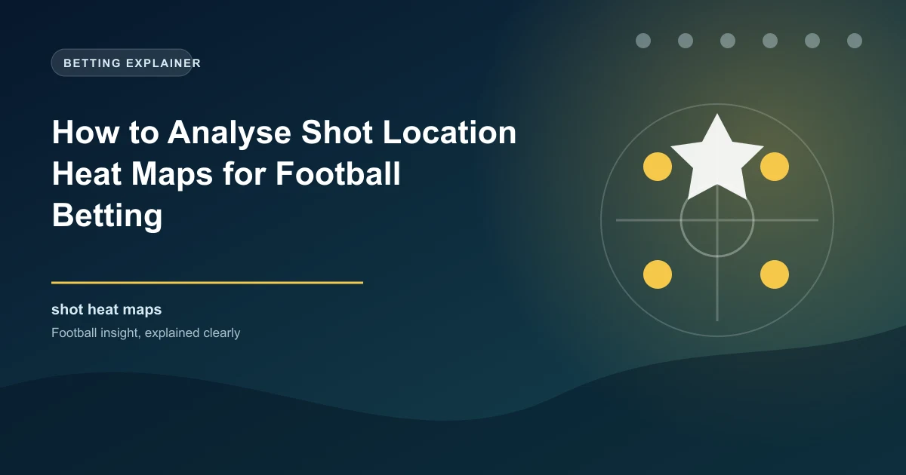

Every shot in football is not created equal. A shot from 25 yards out carries a fundamentally different scoring probability than a shot from 6 yards. Understanding this distinction is at the heart of modern football analytics, and shot location heat maps are one of the most powerful visual tools for grasping it. By learning to read and interpret these maps, you can identify which teams create high-quality chances, which are wasteful with their opportunities, and where the value lies in the goals markets. This guide teaches you everything you need to know about shot location heat maps and how to apply them to your football betting strategy.
A shot heat map is a visual representation of where a team (or player) takes their shots during matches. The map overlays shot locations onto a diagram of the attacking half of the pitch, with colour coding indicating the frequency of shots from each area. Warmer colours (red, orange) indicate areas from which many shots are taken, while cooler colours (blue, green) indicate areas with fewer shots. The resulting image gives you an instant picture of a team's shooting profile and attacking tendencies.
Shot heat maps are typically generated using data from cameras and tracking systems that record the exact coordinates of every shot attempt. This data is then aggregated across multiple matches to create a cumulative picture of where a team's shooting activity occurs. The maps are available for individual matches or for season-long totals, allowing you to identify both short-term patterns and long-term tendencies.
Reading a shot heat map effectively requires understanding the relationship between shot location and scoring probability. Here are the key zones to identify:
The central area directly in front of goal, between the 6-yard box and the penalty spot, is the highest-value shooting zone on the pitch. Shots from this area have the highest expected goals (xG) value because the shooter is close to goal, has a wide angle, and the goalkeeper has minimal time to react. A heat map showing a concentration of shots in this zone indicates a team that creates excellent chances. These teams tend to score frequently and reliably, making them strong candidates for the over 1.5 goals and team to score markets.
Shots from the wide areas of the penalty box, near the byline or the edge of the 18-yard area, have lower xG values because the shooting angle is tighter. Teams that take many shots from these areas may be crossing the ball frequently or cutting inside from wide positions. While these shots are less efficient, they can still generate goals, particularly from skilled finishers who can score from tight angles. A heat map concentrated in wide box areas suggests a team that relies on crosses and wing play rather than central penetration.
Shots from outside the penalty area have the lowest xG values because of the distance and the number of bodies that may be between the shooter and the goal. Long-range shots have an average xG of approximately 0.03-0.05, meaning they score roughly 3-5% of the time. A heat map showing a heavy concentration of shots from outside the box indicates a team that struggles to penetrate the penalty area and is forced to shoot from distance. These teams often underperform their shot totals because the low quality of their chances limits their goal output.
The most efficient way to quantify shot quality is through xG per shot. A team averaging 0.12 xG per shot is creating significantly better chances than a team averaging 0.06 xG per shot. The first team averages a shot with a 12% chance of scoring, while the second averages 6%. Over 15 shots per match, this difference translates to approximately 0.9 expected goals versus 0.45 expected goals, a massive gap in betting terms.
One of the most common mistakes in football analysis is equating shot volume with attacking quality. A team that takes 20 shots per match is not necessarily more dangerous than a team taking 10 shots if the quality of those shots is vastly different. Shot location heat maps reveal this distinction clearly.
Consider two hypothetical teams over a 10-match period:
| Metric | Team A | Team B |
|---|---|---|
| Shots per match | 18 | 10 |
| % shots inside the box | 35% | 75% |
| xG per shot | 0.07 | 0.14 |
| Total xG per match | 1.26 | 1.40 |
| Goals scored per match | 1.1 | 1.6 |
Team A takes nearly twice as many shots as Team B, but Team B creates better chances and scores more goals. The heat map for Team A would show heavy activity outside the box, while Team B's heat map would be concentrated in the central areas of the penalty box. Without looking at shot location, you might assume Team A is the more dangerous attacking unit. The heat map tells a completely different story.
Different tactical approaches create distinct shot profiles that are clearly visible on heat maps:
Teams like Manchester City under Guardiola create a high proportion of shots from the central areas of the penalty box. Their patient build-up play, intricate passing combinations, and movement between the lines result in shots from high-value positions. Their heat maps show a concentrated red zone directly in front of goal. These teams are strong over 2.5 goals candidates because the quality of their chances translates into consistent goal output.
Some teams, particularly those that struggle to break down low-block defences, resort to frequent long-range efforts. Their heat maps show significant activity outside the penalty area. While these shots occasionally produce spectacular goals, they are statistically inefficient. Matches involving heavy long-range shooting teams often produce fewer goals than the shot totals would suggest.
Teams that rely heavily on width and crossing generate shots from the wide areas of the penalty box. Their heat maps show concentrated activity on the flanks and near the byline. These teams' goal output is highly dependent on the quality of their deliveries and the aerial ability of their forwards. When the crossing is accurate and the forwards are winning headers, these teams can score freely. When the crossing is poor or the opposition defence dominates aerially, they struggle to score.
Central-dominant team vs cross-dependent team: The central-dominant team has the advantage because they create higher-quality chances. Back them in the 1X2 and over 1.5 markets.
Long-range team vs low-block defence: The low-block defence will force more long-range shots, reducing the match's goal probability. Under 2.5 goals offers value.
Two central-dominant teams: Both teams create high-quality chances, making over 2.5 goals and BTTS likely.
Two long-range teams: Low shot quality at both ends reduces goal probability. Under 2.5 goals and no BTTS are attractive.
Shot location data is one of the strongest predictors of total goals in a match. Here is how to apply it:
Matches where both teams have heat maps concentrated inside the penalty box are strong over 2.5 goals candidates. These teams create high-quality chances consistently, increasing the probability of multiple goals. Look for matches where both teams have an xG per shot above 0.10 and more than 50% of their shots originate from inside the box.
When both teams' heat maps show significant activity outside the box or in wide areas, the under 2.5 goals market becomes attractive. Low shot quality at both ends of the pitch limits the total goal output. Additionally, matches where both teams employ deep defensive blocks, forcing opponents into long-range efforts, tend to produce fewer goals.
Compare a team's shot heat map from their last 3-5 matches with their season-long heat map. If a team that typically creates central chances has recently been forced into wider or more distant shots, this may indicate a tactical problem or opponent adaptation. This shift in shot quality often precedes a drop in goals scored, creating value in the under goals market for their next fixture.
Several platforms offer free access to shot location data and visualisations:
Shot heat maps have limitations you should be aware of. They do not account for the quality of the chance beyond location. A shot from 12 yards with three defenders blocking the goal has a much lower actual probability of scoring than a shot from 12 yards with a clear sight of goal. Additionally, heat maps can be influenced by game state. A team that is winning comfortably may take fewer shots or shoot from less dangerous positions as they manage the game. Always contextualise heat map data with the match situation and opposition quality.
WinFulltime analyses shot location, xG, and chance quality to deliver data-driven betting predictions.
View Today's PredictionsGet live predictions and in-play tips for matches happening right now.
View In-Play Tips Win
Win